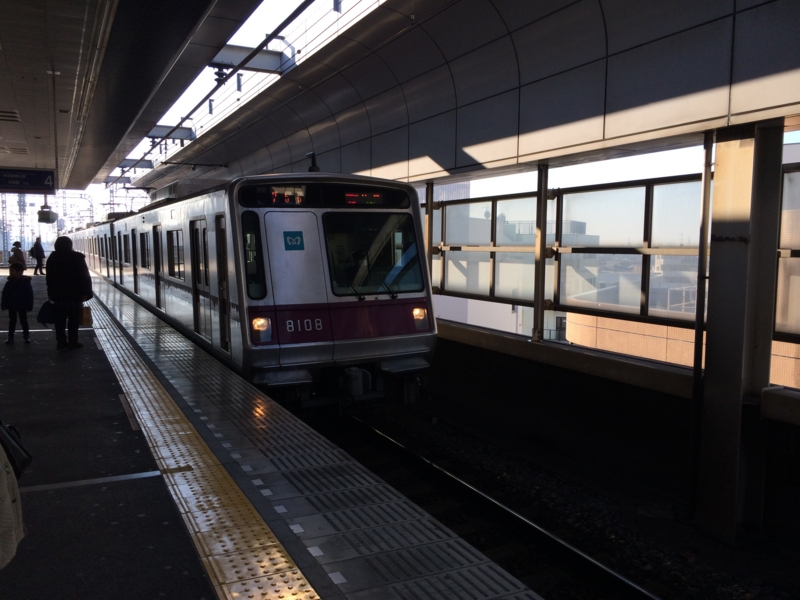
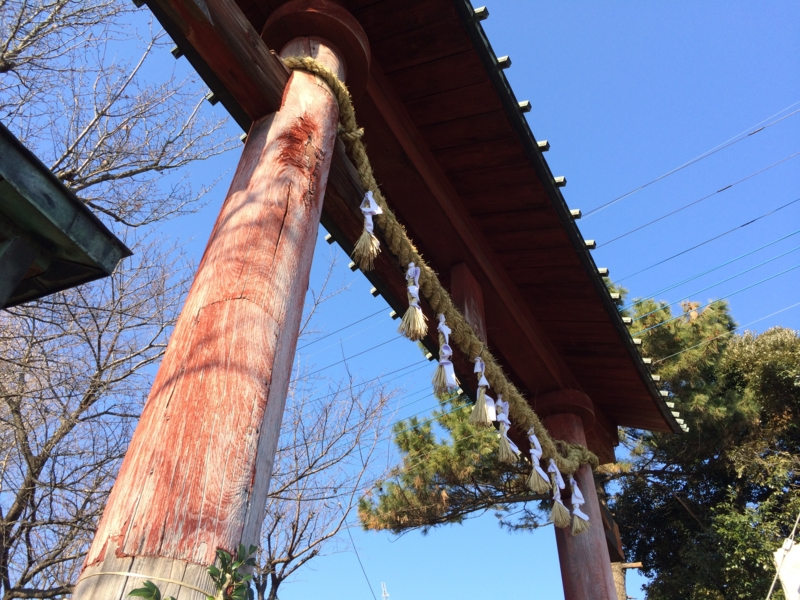
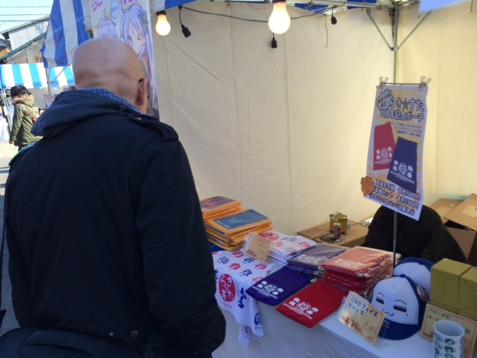
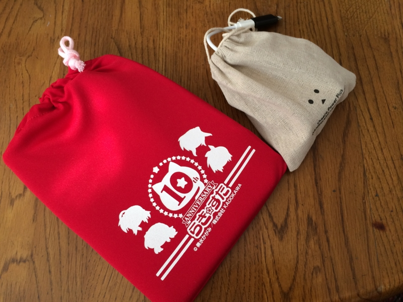
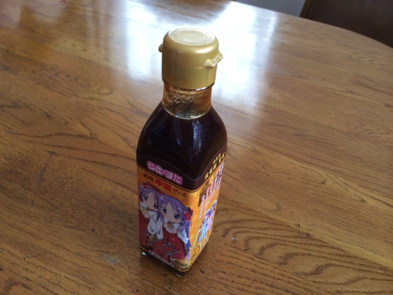
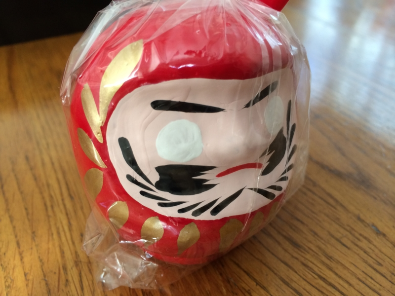
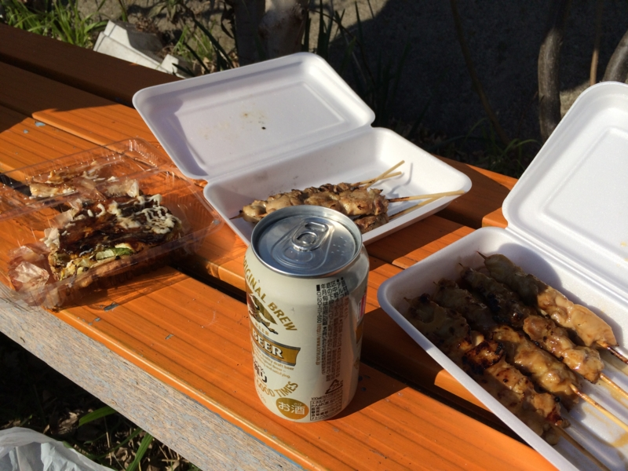

初詣に『らき☆すた』神社行ってきた
公開日：

元日は @jz5 と @mikan_x とで鷲宮神社にいってきた。総武線・西船橋駅から武蔵野線・東武線を乗り継ぐことおよそ1時間半ぐらいかな。埼玉の久喜っていうだいぶ田舎の方まで出陣。

この神社はアニメ・マンガ『らき☆すた』の舞台になった神社なのだそうだ。割りと由緒のある神社らしく、なかなかいい感じに古びたところだった。
それだけに、アニメキャラのパネルが目立つｗ 自分は『らき☆すた』を観たことはないから、かなりアウェー感を感じていたのだけど……。

みんながガッツリグッズを買っているのを見て、自分も割と買ってしまった。

iPad mini がピッタリ入る、クッション付きのポーチ。
缶バッヂ。1回300円でサイコロを振って当たったものがもらえるのだけど、@jz5 が全種類揃えようと躍起になってた。

ツンダレソース。たぶん、中身はタダの中濃ソース。帰って母と妹に見せたら「こんなんにカネ払うのバカじゃね？」って散々ディスられた。俺もそう思うけど、人間というものは決して経済合理性一辺倒な存在ではないのだよ。

ついでに、おかんのために小さなダルマを1つ買った。母にはお年玉を1万円ぐらいあげようと思ってたのだけど、神社で散財しすぎて財布に5千円しか残ってなかった。なので、500円で衝動買いしたダルマをつけて誤魔化した。

あとは屋台でメシ食って帰宅。たこ焼きが表面から中までふっわふわの不思議な食感で、印象深かった。大阪でこれを出したら殴られると思う。まぁ、埼玉ならこれもアリ。
ちなみに、『らき☆すた』は今年で10周年なのだそうだ。誰かもってたらみせてください。